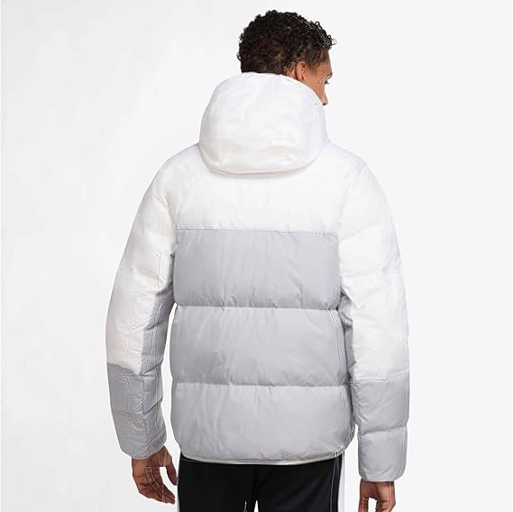
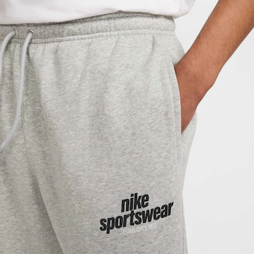

Loja Nike

Sobre a Loja
A Nike é uma das maiores e mais reconhecidas marcas de artigos esportivos do mundo. Fundada em 1972, a empresa se destaca pela inovação em tecnologia e design de produtos de alta qualidade. A loja oferece uma ampla variedade de tênis, roupas e acessórios para atletas e entusiastas de esportes, combinando estilo, conforto e desempenho em cada produto.
Tênis
-

Samba OG
Este tênis adidas Samba OG é essencial para quem cria tendências em vez de só as seguir.
-

Sambae
Este tênis tem uma parte cabedal de couro macio e forro sintético para manter você confortável o dia todo.
-

Samba OG W
O cabedal em couro macio, a biqueira reforçada e o solado de borracha natural têm um apelo retrô e durabilidade.
-

Samba XLG
O cabedal em couro e têxtil é finalizado com uma sobreposição de biqueira de suede
Roupas
-

Camiseta Dri
A camiseta Dri-Fit Nike Pro Training é feita com tecido leve e respirável que ajuda a manter você seco e confortável durante os treinos intensos.
-

Shorts Fleece
O shorts Nike Sportswear Club Fleece Infantil é feito com tecido macio e confortável que oferece aquecimento e proteção durante os dias frios.
-

Jaqueta Storm
A jaqueta Nike Sportswear Storm FIT Windrunner é feita com tecido leve e resistente que oferece proteção contra o vento e a chuva.
-

Calça Fleece
A calça Nike Sportswear Club Fleece Masculina é feita com tecido macio e confortável que oferece aquecimento e proteção durante os dias frios.